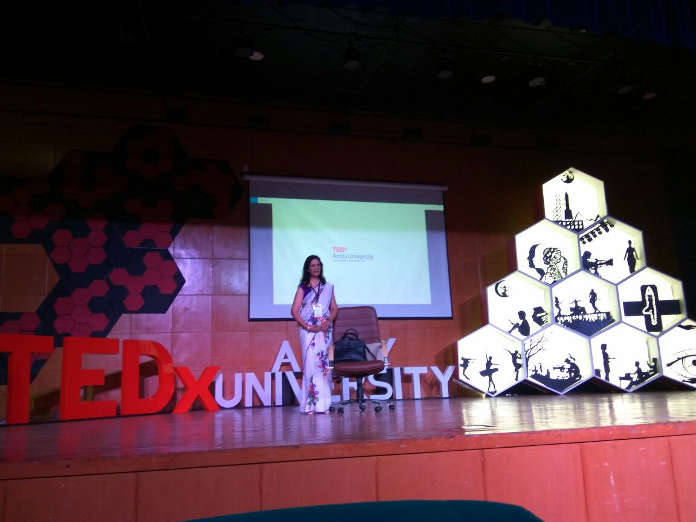

Awards And Achievments

Blind people around the world are making progress in demanding and winning equal treatment. One woman’s victory is an important landmark in society accepting the rights of disabled persons.
Have a glance at some achievements of Preeti Monga
- National Awards for the Empowerment of Persons with Disabilities, 2013 under the category – Best Employees/Self Employed with Disabilities from the President of India.
- State Award for the Exceptional Achievement in Entrepreneurship , 2015 by the Department of Social Welfare, GNCT of Delhi.
- Awarded the Ashoka fellowship.
- Awarded Dr. Verghese Kurien Award by Rex on 26 Nov 2016.
- Awarded Rex Karamveer Global Fellowship 2014-2015.
- Honored by Sarthak Foundation for having counseled and mentored the founder to work in the field of disability in Dec 2012.
- Awarded FLO Award 2011-2012 for outstanding achievement from FICCI Ladies Organization.
- Honored by Chandigarh Senior Citizen Association, awarded by Kumri Selja for working in the field of Empowerment of Challenged Children 2011
- Awarded the Dr. Batra’s Positive Health Award by Dr. Batra’s Positive Health Clinics Pvt. Ltd. Presented by Miss India Earth World in 2011.
- Awarded the National Women Excellence Award (Nav Kiran Award) by the Women’s International Network in 2010.
- Awarded The Silver Phoenix Award by IIPM, presented by Mr. Arindam Choudhury in 2009.
- Honored by the Women Development and Environment Foundation in 2008.
- Inner Flame Award (1999): Awarded by Full Circle, for extraordinary courage, conviction and dedication to life by Mr. I. K. Gujral (Former PM of India).
- Awarded Red and White Bravery Silver Award 1999, for Social Act of Courage Presented by Mrs. Sheila Dikshit, Chief Minister Delhi.
- Vocational Service Award (1996) Awarded by ROTARY CLUB DELHI for outstanding service in opening new vocations in which visually impaired persons can earn a living i.e. Teaching Aerobics, Sales & Marketing, Public relations.
- Neelam K. Kanga Award (1996) Awarded by The National Association For The Blind, Bombay for outstanding achievements in self-rehabilitation, overall growth & progress in spite of vision impairment as well as service in the field of Disability.
- Manav Sewa Award (1995) Awarded for outstanding service in the field of disability to have successfully rehabilitated others, and self. The Award was given by an NGO ‘SAPNA’ through Ms. Sonia Gandhi in the memory of Shri Rajiv Gandhi.
- Freelance Journalist: Articles published in National dailies like Hindustan Times, Times of India, and Pioneer.
- Was instrumental in taking the issue of opening a current account by blind people to the Human Rights Commission and having this order passed in the State Bank of India.
- Participated in the first integrated Fashion Show in Chennai on 10th December 1997 along with celebrities like Ms. Aishwarya Rai, Ms. Usha Uthup etc. also participated in an integrated fashion show held in Delhi organized by Zee TV and NCPEDP along with celebrities like Mr. Rahul Dev etc. in the year 2003.
- First blind person to have successfully done transcription of conference for RGF and NCPEDP.
- Invited to speak at the inauguration of the first film festival on disability at AlNoor in Dubai.
- Invited to address upcoming women entrepreneurs, to inspire them at the I-Inspire conference held in Delhi attended by 200 women in April 2013.
- Invited to speak at the occasion of world disability day 2013 at an event in Hongkong organized by Community Business & Conducted Demystifying workshop for Barclays. Chaired/Moderated a session on Employment of PWDs in the corporate sector with panelist from Barclay Japan & Hongkong, Nomura, Microsoft Singapore.
- Chosen by the Vodafone foundation as an extra ordinary woman and profiled on their Red Rickshaw Revolution campaigning web site.
- Founder CEO of Silver Linings, an organization which inspires, guides, motivates and helps under privileged women and disabled persons along with anyone else that may seek the same.
- Founder CEO of Silver Linings Services. An Executive Search & Training company.
- Corporate Trainer, Life Coach, Author, Counselor and Motivation speaker.
- Autobiography by the name of ‘The Other Senses’ published by Roli Books in 2012.
- Participated in the integrated Fashion Show in Delhi 30th September, 2016 along with Model Sonika Sahay, organized by Roko Cancer and The Imperial Hotel.
- Invited to speak at Tedx Amity in September 2016 topic was “Blending Vision”
Some media coverage clips
"Preeti on Times now !"
"A short interview of Preeti on 'Pragya TV'!"
Others
-
THE HINDU: When she talks, the world listens
- http://yourstory.in/2011/01/preeti-monga-founder-silver-linings-and-winner-of-dr-batras-positive-health-awards-2010/
- http://dailypioneer.com/vivacity/59347-aerobics-in-the-dark-.html
- http://www.thehindu.com/news/cities/Delhi/article3543626.ece
- http://www.flickr.com/photos/33810524@N02/4631930705/
- http://global.samsungtomorrow.com/?p=9192
- http://www.theweekendleader.com/Resilience/1420/finding-light.html
- http://article.wn.com/view/2012/06/19/Holding_up_the_sky/
- http://www.eyeway.org/includes/personality-development
- http://corporate.drbatras.com/en/events.aspx?id=65
- http://www.thehindu.com/todays-paper/tp-features/tp-bookreview/article3908996.ece
- http://freepressjournal.in/loss-of-sight-never-means-saying-no-to-life/
- http://www.thehindu.com/arts/books/printpick/article4064804.ece?css=print
- http://www.theshillongtimes.com/2012/12/09/willpower-works-wonders/
- http://www.theweekendleader.com/Resilience/1420/finding-light.html
- http://post.jagran.com/sakhi-recipe-of-success-cooked-by-unsung-heroes-1324982478
- http://yummyclip.com/show/adhoore+khwab+zindagi
- http://ibnlive.in.com/newstopics/Jet-Airways/page-7.html
- http://www.setuindia.in/tie_ups.html
- http://www.delhievents.com/2012/07/touched-by-faith-workshop-for-people.html
- http://www.hindu.com/2001/05/31/stories/13310464.htm
- http://www.sentinelassam.com/multilingual/englishnews.php?dtP=2012-12-08
- http://www.tribuneindia.com/2001/20011127/ncr.htm
- http://www.hindu.com/2009/12/04/stories/2009120452920400.htm
- http://creamdesigners.com/dr.shroff_charity/
- http://ma-ha-schulze.de/index.php?menuid=0&reporeid=427
- http://newindianexpress.com/lifestyle/books/article1407238.ece
- http://www.iftc.org.in/3rdglobalfestival/filmondisability.html
- http://www.thebetterindia.com/author/preeti-monga/
- http://htsyndication.com/htsportal/article?arid=%22766393%22&pub=%22New+Indian+Express%22
Articles
1988.06.05.Mid Day
1989.25.11.The Times of India
1991.01.12.The Tribune
1991.Excercising Mind Over Disability
1991.Nov.23-29.Sun
1994.04.12.The Pioneer
1994.09.12.The Hindu
1994.15.10.The Pioneer
1994.29.08.The Times of India
1994.Conference on Disabled Women by VHAI
1994.Looking Beyond.NAB
1995.01.02.The Hindustan Times
1995.05.02.The Hindustan Times
1995.07.08.The Hindu
1995.10.11.The Pioneer
1995.13.12. The Hindustan Times
1995.14.09.The Pioneer
1995.23.08.The Pioneer
1995.25.02.The Hindustan Times.KS
1995.26.04.The Hindustan Times
1995.26.04.The Hindustan Times
1995.30.09.The Pioneer
1995.Nov-Dec.Health for The Millions
1995.Sampark
1996,Nov.Sarita
1996.01.01.National Herald
1996.04.05.The Hindustan Times
1996.01.12.The Pioneer
1996.06.07.The Hindustan Times
1996.08.05.The Hindustan Times
1996.08.05.The Times of India
1996.10.04.Indian Express
1996.11.05.The Hindustan Times
1996.21.03.Navbharat Times
1996.26.04.Times of India
1996.Nov-Dec.The Indian Optician
1997.06.03.The Hindustan Times
1997.23.07.The Times of India
1997.April-June.Ability
1997.Blind Welfare
1997.She Can.Nab
1998.13.12.Navbharat Times
1998.22.06.Outlook
1998.Nov.Vanita
1999.09.03.The Times of India
1999.21.03.The Financial Express
1999.27.05.Indian Express
1999.27.05.The Hindu
1999.28.11.The Hindustan Times
1999.30.01.The Statesman
2000.Dec.Health for the Millions
1999.July-Dec
2013.03.12.Times of India
2013.06.01.The Indian Express
2013.15.11.The Hindustan Times
2013.22.12.Danik Jagran
2014.01.03.The Hindu
2014.10.10.The Weekend Leader
2014.10.13.The Hindu
2014.28.02.The Hindu
2014.July-Aug.Diary India International Centre
2015.03.02.Injdia Education Diary
2015.08.03.Danik Jagran
2015.08.03.Danik Jagran.Rampur
2015.16.02.News Patrolling
2015.27.02.Deccan Hearald
2015.27.02.Deccan Herald
alnoorspneeds.ae_wp-content_uploads_Main
Esha Achiever of the Month
Handbook for Women with Visual Impairment - 10
LK Advani's Blog _ Blog Archive OUTSTANDING PHOTOGRAPHS_ A UNIQUE BOOK FROM SIPRA DAS _ Sri LK Advani_'s Blog
National Awards for the Empowerment of Persons with Disabilities-2013 - Government World Magazine
The Weekend Leader